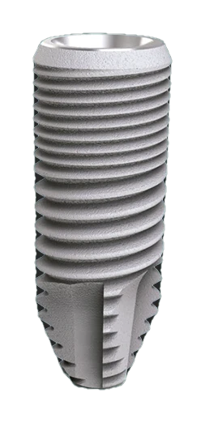

Torq®.
Design inovador para uma inserção rápida e precisa, com tecnologia que garante compactação óssea e dissipação de forças.

Estabilidade desde a primeira volta.
Espiras com alto poder de corte e colar reduzido para preservar a espessura óssea na cervical.
Tecnologia Titânio Hard®
Mais resistente. Titânio Hard® com 955 MPa de resistência, base do design de compactação óssea e dissipação de forças do Torq®.
Cada detalhe tem uma função.
Da cervical ao ápice, a geometria do Torq® foi desenhada para estabilidade.
Colar reduzido
Aumenta a espessura óssea na cervical do implante.
Espiras de alto corte
Inserção rápida e precisa, com compactação óssea.
Web®
Ampliação do contato ósseo em toda a superfície.
Bioplatform®
Plataforma do tipo switch, com conexão Cone Morse NP® de 24° e rosca interna M1.6.
Torque de instalação recomendado.
Especificações.
| Conexão | Cone Morse NP®Angulação interna de 24° e rosca interna M1.6 |
|---|---|
| Diâmetros | ⌀3.5mm, ⌀3.75mm, ⌀4.0mm e ⌀5.0mm |
| Comprimentos | 8.5mm10mm11.5mm13mm15mm |
| Material | Titânio Hard®955 MPa, 73% mais resistente |
| Tratamentos e plataforma | Web® (ampliação do contato ósseo) e Bioplatform® (tipo switch) |
| Torque de instalação | 60 N.cm (recomendado) |
Principais indicações.
- Implantações unitária, parcial e múltipla
- Protocolo convencional e carga imediata
- Indicação dupla, maxila e mandíbula
Veja em 3D.
Escolha o diâmetro e o comprimento e veja o implante mudar em tempo real.
Arraste o implante para girar.
Protocolo de fresagem.
Escolha o diâmetro para ver a sequência de fresas e a fresa final por densidade óssea.
| Densidade | ⌀3.5 | ⌀3.75 | ⌀4.0 | ⌀5.0 |
|---|---|---|---|---|
| Osso macio | 2,8mm | 3,2mm | 3,6mm | 3,8mm |
| Osso médio | 2,8mm(3,2mm)* | 3,2mm(3,4mm)* | 3,6mm(3,8mm)* | 3,8mm(4,2mm)* |
| Osso duro | 3,2mm | 3,4mm | 3,8mm | 4,2mm |
*Valores entre parênteses: consulte a lâmina técnica do Torq® NP para a indicação de uso.

Conheça também.
Todas as linhasPronto para o Torq®?
Fale com a equipe comercial para condições, kits compatíveis e disponibilidade.